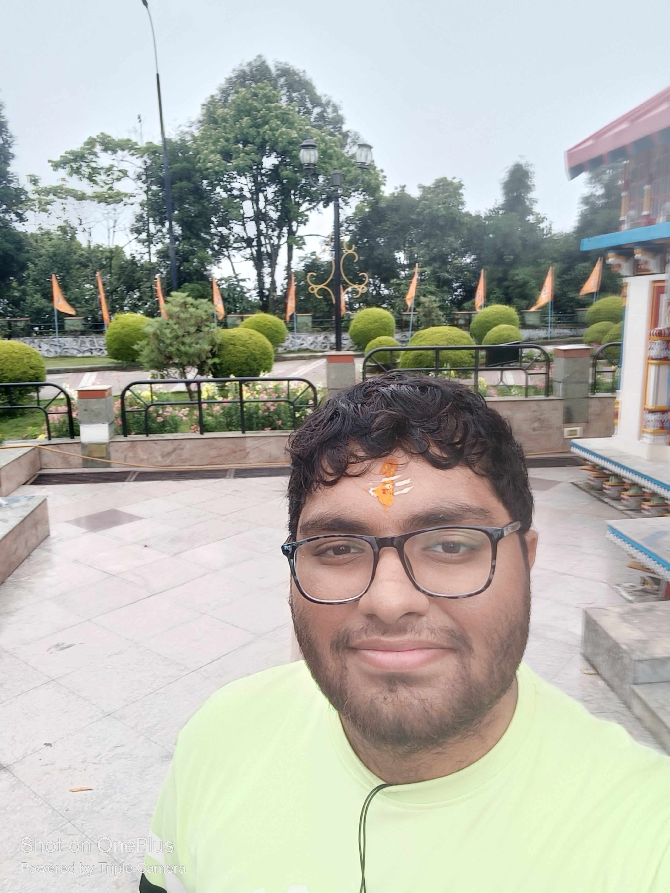

Mukund Khamampati

Summary
I am a curious and hardworking person. Love to research and get to the root cause of things
Educational Qualification
- Metriculation (1oth Grade) :- Delhi Public School, Hyderabad
- Intermediate(10+2):- Urbane Jr College
- Bachelors of Technology in Electronics and Communication Engineering:- Visvesvaraya National Institute of Technology(2023)
Certifications
- Advanced Embedded Systems Certifications(8-9 Months) :- Vector India
Experience
- Votary SoftTech Private Limited(7 months) :- Worked in an object detection model for detecting faulty board and porting on QCS 610 Board. Worked for Qualcomm Private India limited as an Android Platform Developer
- Zen 3 Technologies (3 months and current):- Working as a .NET developer intern and support personal, where we work with .NET Web API's ,Postgres and Elastic search, been instrumental in the development of DynamicTours Website.
Skills
- Linux Administration,Kubernettes, TCP-IP,Docker, AWS Practioner Certification
- Programming languages :- C,C++,Python,Embedded C, Python,C#,HTML,CSS,JS
- Frameworks:- Postgres,.NET Web API's
Hobbies
- Biking
- Movies and Music
- Badmenton
Accolades and Awards
- Helped in organizing a IEEE workshop on IoT Systems where I Spoke about MicroControllers,Sensors and Actuators